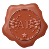
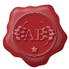
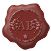

T
Terracota

Adna Barbosa
A cor da logo atual e das lombadas de Gramática em Diagramas. Combina com o resto do site.
Nova versão, na linha da sua referência: borda de cera em cinco ondas, aro em relevo, "AB" e ramos de folhas prensados, com uma florzinha embaixo. Desenho original, em três cores. As propostas anteriores (S1 a S3) continuam mais abaixo.

A cor da logo atual e das lombadas de Gramática em Diagramas. Combina com o resto do site.

O vermelho clássico de lacre, como na sua referência. Destaca mais, mas foge um pouco da paleta terrosa.

Mais escuro e sóbrio. Fica elegante no cabeçalho claro.
A cor da logo atual. Iniciais em letra de livro, com um anel de pontinhos, como um sinete antigo.
Cera vinho-escura, o A com o b itálico entrelaçado e um anel de folhas de louro. Mais solene.
Cera dourada, as iniciais ao centro e "ADNA BARBOSA · EDUCADORA" gravado no anel.
Como escolher: responda T, R ou V (ou S1, S2, S3), ou diga o que misturar, por exemplo “cor da S1 com os ramos da S2”.